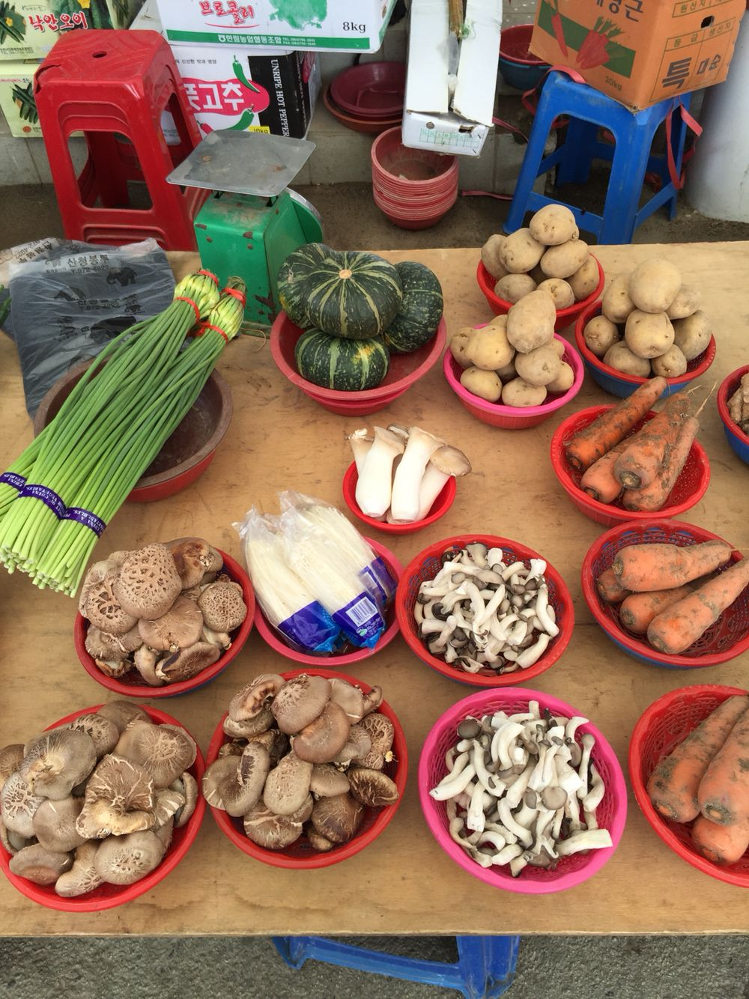

물레내장
물레내면 오일장 · 끝자리 2·7일 · 06:00~15:00
오늘 장날
10월 2일 금요일
다음 장날은 10월 7일 수요일, 5일 뒤다.
물레내장은 끝자리가 2와 7인 날마다 물레내 둑 아래 장마당에 서는 오일장입니다.

오늘 시세
10월 2일 장, 파는 점포 값의 평균. 지난 장날(9월 27일)보다 오른 품목 12가지, 내린 품목 10가지
구역 일곱
장마당길을 사이에 두고 노점 36곳이 구역별로 선다. 상설 점포 6곳은 장터길 쪽 건물에 있다
장날 오는 길
- 군내버스 11번
- 장날 20분 간격 · 읍 터미널에서 18분
- 주차
- 세 곳 266면 · 공영주차장 처음 1시간 무료
- 차량 통제
- 장마당길 장날 05:00~16:00
장보기 목록
점포 목록·점포 지도에서 담은 품목은 수량과 예상 금액이 함께 목록에 모인다. 목록은 이 브라우저에만 저장되고, 구역 순서로 묶어 인쇄할 수 있다.